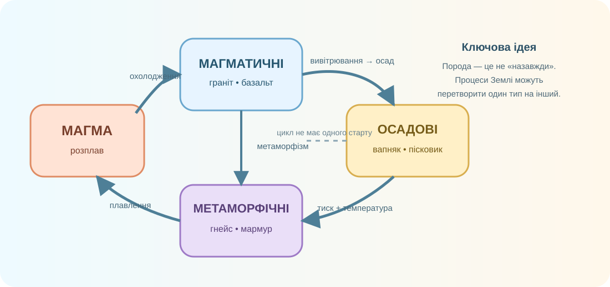

Мінерал
Природна речовина з упорядкованою внутрішньою будовою та характерним хімічним складом і властивостями. Приклади: кварц, кальцит, галіт.
З чого складається камінь під ногами, як «народжуються» граніт, базальт, пісок, вапняк, торф і кам’яна сіль — та чому одна й та сама глина може бути червоною, сірою або білою?

Що з цього більше схоже на «одну речовину», а що — на суміш різних зерен?


USGS визначає мінерал через природне походження, упорядковану внутрішню будову та характерний склад. Порода — агрегат одного або кількох мінералів.
Натискайте зразки вище.
Натискайте зразки вище.
Спершу спробуйте відновити процес із доказів. Теорія буде після.

Не вгадуйте за кольором. Дивіться на зернистість, шаруватість, пористість і кристали.


Глиняні мінерали самі по собі можуть бути світлими, але домішки різко змінюють колір.
Червоні, жовті й бурі відтінки часто пов’язані з оксидами/гідроксидами заліза; сірі та темні — з органічною речовиною або відновними умовами; каолінові глини можуть бути дуже світлими.
Поставте кроки в логічний порядок.
USGS наголошує: мінеральна сировина є вихідним матеріалом для доріг, будинків, смартфонів, їжі та багатьох інших речей.
Учень бачить у граніті прозорі зерна кварцу й робить висновок: «Граніт — це просто кварц іншого кольору».
Під час перегляду випишіть один процес, який утворює породу, і один, який її перетворює.
Природна речовина з упорядкованою внутрішньою будовою та характерним хімічним складом і властивостями. Приклади: кварц, кальцит, галіт.
Природний агрегат одного або кількох мінералів. За походженням породи поділяють на магматичні, осадові й метаморфічні.
Природне мінеральне або органічне утворення земної кори, яке людина використовує або може використовувати у господарстві.
Чому за зовнішнім виглядом одного зерна не можна надійно визначити походження всієї породи?
§23. Оберіть один матеріал у квартирі/будинку (скло, цегла, цемент, гіпсокартон, сіль, кераміка) й складіть ланцюжок: предмет → сировина → гірська порода/мінерал → спосіб утворення. Додайте 1 фото або схему й 2 речення-докази.
📘 Електронний підручник / Всеукраїнська школа онлайн →Тест відкриється після введення даних учня.